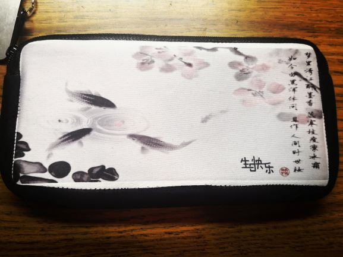
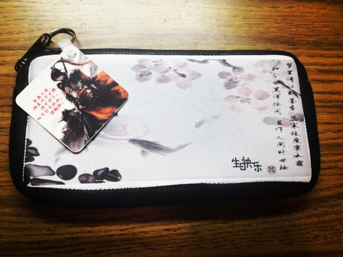

In the class today, our goal was to design and make our own clocks by using laser cutter. I designed my clock on Corel Draw first. The process of designing is actually really interesting althoug I didn't do it very well. After finishing the design and dowload the file in my flash drive, the next thing I need to do is to use laser cutter to cut it. The first thing I need to do with laser cutter is to make the machine "focus", then I let the cutter warm up to make sure it really works by cutting a cardboard. I put a piece of woodboard into the laser cutter to cut the surface of my clock after I setted the speed, power and turned on the air. It's really important to turn the air on. During the process of cutting, the firing may happen (we don't want a fire alarm!). Then after almost 1 hours, I got my clock! The last thing I needed to do is just assembling all different parts of clock together!
Except printing a T-shit, I also needed to use sublimination to transfer the images of a kind of special paper to some objects through the help of heat. I chose to customize a pencil pouch. For doing this, I created an image by using CorelDraw (remember you need to mirror the image!). Then I printed the image on the special paper which is designed especially for sublimination. After I got my printing image, I cutted it according to the size of the surface of my pencil pouch then sticked the cutted paper on the pencil pouch with images face down. Then what I need to do is to put pencil pouch with image into the heat press for 60 second! After I took off the paper, I got a fantastic pencil pouch!

